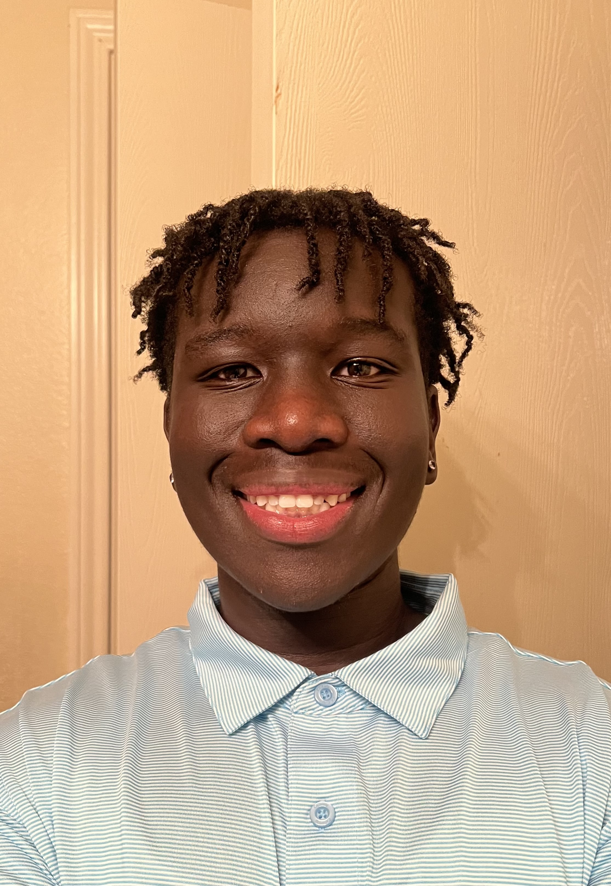

My Biography

Tony Kamis
Tony Kamis has always had a passion for food and making people happy. After over 10 years working in restaurants, he decided to open his own place. In 2016, Tony opened Suave Cafe right on the University of Houston Sugarland campus. Tony is dedicated in creating delicious food, but also for providing a welcoming, chill place for people to relax and enjoy eating!
Opening Suave Cafe had been a long-time dream ever since Tony's college days working as a barista. The seed was planted early on - he knew he wanted to parlay his love of food into running his own establishment someday and creating a welcoming community hang-out.
Outside Suave Cafe's purple walls, Tony still makes time for his childhood buddies, attending Texans' games together whenever he can. He also recently joined a local volleyball team, helping him work off steam and stay active. Tony just feels fortunate to do what he loves - serving hungry college students flavorful food and bringing a little more joy into their busy lives.